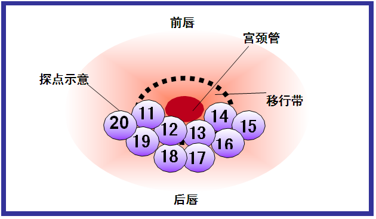

<!-- start print report -->
<div style="margin-bottom:0px;margin-top:0px;">
    <div id="printdiv" style="margin-bottom:0px;margin-top:0px;">
        <style media="print">
            input {
                background-color: transparent;
                border-style: solid;
                border-width: 0px 0px 0px 0px;
                border-color: darkred;
                font-family: 'simsun';
                /*width:80px;*/
            }

            #checkdate {
                text-align: right
            }

            #printArea {
                display: inline-block;
                overflow: visible;
            }

            td {
                font-size: 20px;
                font-family: 'simsun';
            }

            #infoTable td {
                width: 40px;
                max-width: 100px
            }

            input {
                font-size: 20px;
            }

            textarea {
                font-size: 20px;
            }

            legend {
                font-size: 22px;
                background-color: #fff;
                font-family: 'simsun';
            }


        </style>
        <h1 style="margin:35px 20px 5px;font-size:32px;line-height:34px;text-align:center;">
            
            <strong>{{hospital.name}}</strong>
        </h1>

        <h2 style="margin:35px;font-size:30px;line-height:32px;font-weight:400;font-family:'simsun';text-align:center;">
            <!--TruScreen<SUP>&reg;</SUP>-->
            宫颈癌筛查系统（TS）报告单
        </h2>


        <div style="font-size:20px;height:22px;font-family:'simsun';margin-bottom:15px;width: 95%;
              /*chrome 20+*/">
            <!--<div style="float:left;margin-left:15px;">科室:<input type="text" ng-model="report.department"></div>-->
            <span style="margin-left:15px;width:250px"> 科室:{{report.department}}</span>
            <span style="margin-left:45px;width:250px"> 门诊号:{{report.outpatientNo}}</span>
            <span style="margin-left:45px;width:250px"> 住院号:{{report.admissionNo}}</span>
            <span style="margin-left:45px;width:250px"> UID:{{report.uid}}</span>
         </div>


        <fieldset width="100%" style="margin:15px;margin-top:0px;margin-bottom:0px;">
            <table style="width:100%" id="infoTable">
                <tbody>
                <tr style="height:10px">
                    <td colspan="10" style="width:100%"></td>
                </tr>
                <tr>

                    <td style="width:60px">姓名:</td>
                    <!--<td><input type="text" ng-model="report.patientName" required="required" ng-readonly="true"></td>-->
                    <td>{{report.patientName}}</td>
                    <td style="width:60px">年龄:</td>
                    <!--<td><input type="text" ng-model="report.age" style="width:30px" ng-readonly="true"></td>-->
                    <td>{{report.age}}</td>

                    <td style="width:80px"> 病历号:</td>
                   <td> {{report.caseNumber}}</td>

                    <!--<td ng-show="report.isMenopause">是</td>-->
                    <!--<td ng-show="!report.isMenopause">否</td>-->

                </tr>
                <tr>

                    <td> 孕次:</td>
                    <!--<td><input type="text" ng-model="report.pregnancyNumber" ng-readonly="true"></td>-->

                    <td>{{report.pregnancyNumber}}</td>

                    <td> 产次:</td>
                    <td>{{report.childbirthNumber}}</td>
                    <td style="width:80px"> 绝经:</td>
                    <td><input type="checkbox" ng-model="report.isMenopause"></td>

                    <!--<td><label>是否取样:</label></td>-->
                    <!--<td ng-show="report.pregnancyStatus">是</td>-->
                    <!--<td ng-show="!report.pregnancyStatus">否</td>-->
                    <!--<td ng-show="report.pregnancyStatus"><label>周数:</label></td>-->
                    <!--<td ng-show="report.pregnancyStatus"><input type="number" ng-model="report.pregnancyTime" ng-readonly="true"></td>-->
                </tr>

                <td><label>LCT:</label></td>
                <td>
                    <!--<input  type="text" ng-model="report.lct">-->
                    <!-- <select style="width:100%" ng-model="report.lct" ng-options="v for v in lcts">
                    </select> -->
                    {{report.lct}}
                </td>

                <td><label>HPV:</label></td>
                <td colspan="3" >
                    <!--<input type="text" ng-model="report.hpv" style="width:70%">-->
                    {{report.hpv}}
                    <!-- <select style="width:100%" ng-model="report.hpv" ng-options="v for v in hpvs">
                    </select> -->
                </td>

                </tbody>
            </table>
        </fieldset>

        <fieldset style="margin:15px;margin-bottom:0px;">
            <legend><b><font color="#296B3C">主诉</font></b></legend>
            <table style="width:100%">
                <tbody>
                <tr style="height:10px"></tr>
                <tr>
                    <td style="width:5%"><label>白带多:</label></td>

                    <td style="width:3%">

                    <input type="checkbox" ng-model="report.isLeucorrhea" ng-readonly="true"/>
                        <!--<label ng-show="report.isLeucorrhea">是</label>-->
                        <!--<label ng-show="!report.isLeucorrhea">否</label>-->
                    </td>


                    <td style="width:6%"><label>性交出血:</label></td>
                    <td style="width:5%">
                        <input type="checkbox" ng-model="report.isBleed" ng-readonly="true"/>
                        <!--<label ng-show="report.isBleed">是</label>-->
                        <!--<label ng-show="!report.isBleed">否</label>-->
                    </td>

                    <!--<td ng-show="report.isBleed">是</td>-->
                    <!--<td ng-show="!report.isBleed">否</td>-->


                    <td style="width:6%"><label>不规则流血:</label></td>
                    <td style="width:3%">
                        <input type="checkbox" ng-model="report.unregularBleed" ng-readonly="true"/>
                        <!--<label ng-show="report.unregularBleed">是</label>-->
                        <!--<label ng-show="!report.unregularBleed">否</label>-->
                    </td>
                    <!--<td style="width:16%">-->
                        <!--多<input type="radio" name="unrule" value="多" ng-model="report.unregularBleed"-->
                                <!--style="margin-right:1px"/>-->
                        <!--中<input type="radio" name="unrule" value="中" ng-model="report.unregularBleed"-->
                                <!--style="margin-right:1px"/>-->
                        <!--少<input type="radio" name="unrule" value="少" ng-model="report.unregularBleed"-->
                                <!--style="margin-right:1px"/>-->
                    <!--</td>-->
                    <!--<td style="width:2%"><label>LCT:</label></td>-->
                    <!--<td style="width:6%">-->
                        <!--&lt;!&ndash;<input style="width:80%" type="text" ng-model="report.lct" ng-readonly="true">&ndash;&gt;-->
                        <!--{{report.lct}}-->
                        <!--&lt;!&ndash; <select style="width:100%" ng-model="report.lct" ng-options="v for v in lcts">-->
                        <!--</select> &ndash;&gt;-->
                    <!--</td>-->
                    <!--<td style="width:5%"><label>HPV:</label></td>-->
                    <!--<td style="width:6%">-->
                        <!--&lt;!&ndash;<input style="width:80%" type="text" ng-model="report.hpv" ng-readonly="true">&ndash;&gt;-->
                        <!--{{report.hpv}}-->
                        <!--&lt;!&ndash; <select style="width:100%" ng-model="report.hpv" ng-options="v for v in hpvs">-->
                        <!--</select> &ndash;&gt;-->
                    <!--</td>-->
                    <td style="width:6%"><label>其他:</label></td>
                    <td style="width:19%">
                        <!--<input style="width:100%" type="text" ng-model="report.otherComplaints" ng-readonly="true"/>-->
                        {{report.otherComplaints}}
                    </td>
                </tr>

                </tbody>
            </table>
        </fieldset>

        <fieldset style="margin:15px;margin-bottom:0px;">
            <legend><font color="#296B3C">临床表现</font></legend>
            <table style="width:100%">
                <tbody>
                <tr style="height:10px"></tr>
                <tr>
                    <td style="width:6%"><label>光滑:</label></td>
                    <td style="width:6%"><input type="checkbox" ng-model="report.isSmooth" ng-readonly="true"/></td>
                    <td style="width:12%"><label>慢性炎症:</label></td>
                    <td style="width:6%"><input type="checkbox" ng-model="report.isAcuteInflammation" ng-readonly="true"/></td>
                    <td style="width:12%"><label>肥大:</label></td>
                    <td style="width:6%"><input type="checkbox" ng-model="report.isHypertrophy" ng-readonly="true"/></td>
                    <td style="width:20%"><label>柱状上皮异位:</label></td>
                    <td>
                        Ⅲ&#176;<input type="radio" value="重" name="erosion" ng-model="report.erosion"
                                      style="margin-right:1px" ng-readonly="true"/>
                        Ⅱ&#176;<input type="radio" value="中" name="erosion" ng-model="report.erosion"
                                      style="margin-right:1px" ng-readonly="true"/>
                        Ⅰ&#176;<input type="radio" value="轻" name="erosion" ng-model="report.erosion"
                                      style="margin-right:1px" ng-readonly="true"/>
                    </td>

                </tr>
                <tr>
                    <td><label>撕裂:</label></td>
                    <td><input type="checkbox" ng-model="report.isTear" ng-readonly="true"/></td>
                    <td><label>白斑:</label></td>
                    <td><input type="checkbox" ng-model="report.isWhite" ng-readonly="true"/></td>
                    <td><label>纳博特囊:</label></td>
                    <td><input type="checkbox" ng-model="report.isNesslersGlandCyst" ng-readonly="true"/></td>
                    <td><label>接触性出血:</label></td>
                    <td><input type="checkbox" ng-model="report.touchbleeding" ng-readonly="true"/></td>
                    <!--<td>-->
                        <!--有<input type="radio" value="有" name="touchbleeding" ng-model="report.touchbleeding"-->
                                <!--style="margin-right:8px"/>-->
                        <!--无<input type="radio" value="无" name="touchbleeding" ng-model="report.touchbleeding"-->
                                <!--style="margin-right:8px"/>-->
                    <!--</td>-->
                </tr>
                <tr>
                    <td><label>息肉:</label></td>
                    <td><input type="checkbox" ng-model="report.isPolyp" ng-readonly="true"/></td>
                    <td><label>阴道排液:</label></td>
                    <td><input type="checkbox" ng-model="report.isCancer" ng-readonly="true"></input></td>
                    <td><label>其他:</label></td>
                    <td colspan="5">
                        <!--<input type="text" ng-model="report.otherClinical" ng-readonly="true"/>-->
                        {{report.otherClinical}}
                    </td>
                </tr>
                </tbody>
            </table>
        </fieldset>

        <fieldset style="margin:15px;margin-bottom:0px;">
            <legend><font color="#296B3C">TruScreen<SUP>&reg;</SUP>宫颈癌筛查系统检查内容</font></legend>
            <span width="50%" style="float:left">
<table style="clear:left;max-width:460px;width:460px;vertical-align:middle;height:250px">
<tr style="height:5px"></tr>
<!--<tr><td>-->
<!--<label>  主机序列号:<label></td><td style="text-align:left">{{hospital.machineNumber}}</td></tr>-->
<!--<tr>-->
	<!--<td style="width:50%"><label>手控器序列号:</label></td>-->
	<!--<td style="width:50%">{{hospital.handController}}</td>-->
<!--</tr>-->
<!--<tr><td><label>    算法版本:</label></td>-->
	<!--<td style="text-align:left">D2.03G</td>-->
<!--</tr>-->
<!--<tr><td><label>    韧体版本:</label></td>-->
	<!--<td style="text-align:left">{{hospital.firmwareVersion}}</td>-->
<!--</tr>-->
<tr style="height: 60px;"><td><label>    检查类型:</label></td>
	<td style="text-align:left">筛查 </td>
</tr>
    <!-- V1.3 2016-04-29 报告单打印中 隐藏点探数量
    <tr><td><label>    点探数量:</label></td>
        <td style="text-align:left" ><input type="text" ng-model="report.pointNumber" />
    </tr>
     -->
<tr style="height: 60px;"><td><label>检查是否完成:</label></td>
	<td style="text-align:left">
	<!--<input type="checkbox" name="isCompleted" ng-model="report.isComplete"/> -->
        <!-- create report  -->
	 
		<!--完成<input type="radio" name="isCompleted" value="完成" ng-model="report.isComplete" style="margin-right:15px"/>-->
	           <!--未完成<input type="radio" name="isCompleted" value="未完成" ng-model="report.isComplete"/>-->
		 <!--<input type="text" ng-model="report.isComplete" style="width:100px" ng-readonly="true">-->
        {{report.isComplete}}
		</td>
</tr>
    <tr valign="top" ng-show="!doesCheckCompleted" style="height: 60px;">
	<td colspan="2">未完成原因:<textarea rows="5" cols="60" name="other" style="height:100%;width:65%;margin-left:10px"
                                    ng-model="report.reason4doesNotComplete" ng-readonly="true"/></td>
</tr>
<!--<tr ng-show="report.pnorValueResult != null && report.pnorValueResult != 0"><td><label>    PNOR值:</label></td>-->
	<!--<td style="text-align:left"><input type="text" style="width: 100px;" ng-model="report.pnorValueResult"/></td>-->
<!--</tr>-->
            <!--<tr ng-show="doesCheckCompleted"><td><label>    转换区域类型:</label></td>-->
   <!--<td style="text-align:left">-->
		<!--&lt;!&ndash;完全可见<input type="radio" name="transformArea" value="完全可见" ng-model="report.transformArea" style="margin-right:15px"/>&ndash;&gt;-->
	           <!--&lt;!&ndash;部分可见<input type="radio" name="transformArea" value="部分可见" ng-model="report.transformArea"/>&ndash;&gt;-->
		  <!--&lt;!&ndash;不可见<input type="radio" name="transformArea" value="不可见" ng-model="report.transformArea"/>&ndash;&gt;-->
         <!--&lt;!&ndash;<input type="text" ng-model="report.transformArea" style="width:100px" ng-readonly="true">&ndash;&gt;-->
       <!--{{report.transformArea}}-->
		<!--</td>-->
    <!--</tr>-->
<tr ng-show="doesCheckCompleted" style="height: 60px;"><td><label>    检查结果:</label></td>
    <td style="text-align:left">
        <!--正常<input type="radio" name="result" value="正常" ng-model="report.checkResult"     style="margin-right:15px"/>-->
        <!--异常<input type="radio" name="result" value="异常" ng-model="report.checkResult"    /></td>-->
      <!--<input type="text" ng-model="report.checkResult" style="width:100px">-->
</tr>

<tr ng-show="doesCheckCompleted && (report.checkResult == '正常')">
	<td></td>
    <td style="text-align:left;font-size:22px;font-weight:bold;text-indent: 20px;">未发现异常
	</td>
</tr>
<tr ng-show="doesCheckCompleted && (report.checkResult == '异常')">
	<td></td><td  style="text-align:left;text-indent: 20px;font-size:22px;font-weight:bold;">可能有异常，应进一步检查
</td>

</tr>
     <!--<tr ng-show="doesCheckCompleted &&  (report.checkResult == '异常')">-->
	<!--<td></td><td  style="text-align:left;font-family:黑体;text-indent: 20px;"><p><b><font size="5">&ge;LSIL</font></b></p>-->
<!--</td>-->
<!--</tr>-->

<tr style="height: 150px"></tr>


<tr><td colspan="2" style="margin:40px 12px 0px 20px;font-size:14px;font-family:'simsun';">医生需要根据现有的检查信息综合对患者病情做出最终的诊断和治疗</td></tr>

    </tbody>
</table>
</span>
            <span style="clear:left;text-align:right;margin-left:40px" width="40%">
            <p style="font-size:14;font-family:'simsun';text-align:right;margin-right: 50px">本次检查遵照下图模式进行</p>
	<div></div>
	<div style="margin-top:10px"></div>
</span>
        </fieldset>

        <fieldset style="margin:15px;margin-bottom:0px;width: 95%" >
            <legend><font color="#296B3C" style="font-family:黑体">进一步处理意见</font></legend>
            <table style="width:100%">
                <tbody style="width:100%">
                <tr style="height:10px" style="width:100%"></tr>
                <tr>
                    <td>按照国家宫颈癌筛查指南定期筛查:</td>
                    <td style="text-align:left"><input type="checkbox" name="regular" ng-model="report.screening" ng-readonly="true"></td>
                </tr>
                <tr>
                    <td>进行阴道镜或阴道镜下活检:</td>
                    <td style="text-align:left"><input type="checkbox" name="colposcopy" ng-model="report.checking" ng-readonly="true">
                    </td>
                </tr>
                <tr valign="top">
                    <td colspan="2">其他: {{report.otherSuggestion}}

                        <!--<textarea id="printArea" rows="5" cols="60" name="other"-->
                                                  <!--style="height:50px;border-left:0;border-right:0;-->
                                                  <!--border-top:0;border-bottom:#000 1px solid;-->
                                                   <!--width:80%-->
                                                    <!--"-->
                                                  <!--ng-model="report.otherSuggestion" ng-readonly="true"/>-->
                    </td>
                </tr>
                </tbody>
            </table>
        </fieldset>
        <div style="margin:10px;">
            <table width="100%">
                <tr >
                    <td style="width:30%">申请医生:{{report.prescribingDoctorName}}
                        <!--<input type="text" ng-model="report.prescribingDoctorName"-->
                                                        <!--style="width:100px" ng-readonly="true"/>-->
                    </td>
                    <td style="width:45%" align="center">报告医生:{{report.doctorName}}
                        <!--<input type="text" ng-model="report.doctorName"-->
                                                                       <!--style="width:100px" ng-readonly="true"/>-->
                    </td>
                    <td align="right" style="width:25%">报告日期:{{report.checkDate}}
                        <!--<input type="text" ng-model="report.checkDate"-->
                                                                      <!--style="width:100px" ng-readonly="true"/>-->
                    </td>
                </tr>
            </table>
        </div>
        <div style="margin:0 12px;font-size:20;font-family:'simsun';">
          本结果仅对本次检查负责，供临床医生参考使用
        </div>
    </div>
</div>
